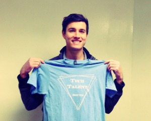
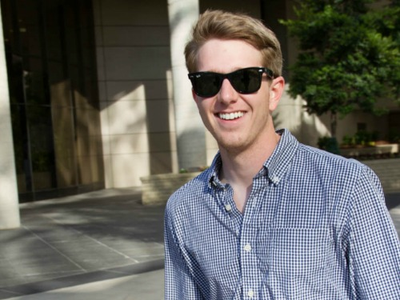
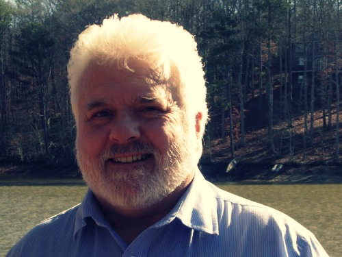
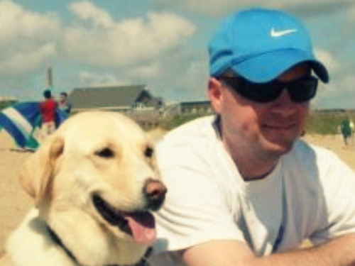

Meet our Instructors

TJ can usually be found in one of three places: chasing his dogs around the yard, figuring out how not to lose a finger with the new saw he got for Christmas, or sitting in front of his laptop coding the next billion dollar idea -- or, as is often for TJ, the next thousand dollar idea. A native Texan, TJ's been a working developer for over 15 years and loves helping new coders figure out what a for loop actually does. TJ is also Co-founder of We&Co and Standard Code.

Code laureate. A lover of events, genetic algorithms, and empowering people with knowledge, Robby can be found most days walking the streets of Atlanta, slaving away over a hot keyboard, or spending time with his beautiful wife Elizabeth. Robby lovingly crafts his lessons from more than 10 years of experience designing and building production web applications. Robby is currently a Senior Software Engineer at Kevy.

Nathan Batson is a WNC native, born and raised, educated at UNC Asheville with a background in Art, Computer Science, and 3D Animation. Nathan's 10 years of web experience started with Flash, before it was a dirty word, and transitioned to traditional full stack web development. For the last 5 years he has been a professional Ruby on Rails developer. After hours he spends time with his awesome wife Rebecca, drawing bad puns in Adobe Illustrator, cycling on the parkway, wasting time playing PC games, and building pet programming projects. Nathan is currently a full time contractor for Zamzee.com.

Louis is an avid coder with a strong focus in Ruby on Rails, HTML5, and CSS. Louis graduated from Brown University and spent some time in San Francisco after school. When he isn't busy teaching students in Charlotte, he spends his time jamming out on the piano and exploring the overlap between programming and musical composition. You can also catch him jetting around town on his brand new scooter.
Travis has been developing Rails apps since '07 and absolutely loves empowering others by teaching them how to create beautiful code from blank text documents. When he's not coaching his two boys’ basketball teams or hiking with his wife in the Smokey Mountains, Travis is learning as much as he can about how to be a better software craftsman. If you stop by his Raritan.com office you'll see him honing his skills while developing software that helps run many of the world's largest data centers.
David has been designing and developing websites and mobile applications for the last 13 years and loving every minute of it (well there was that one minute that wasn't any fun...). He brings a unique mix of frontend design and backend developing experience to the classroom which allows him to see the coding world a bit differently. His company, Big Pixel, focuses on building prototypes, MVPs, and full-blown apps and websites for startups and small business.When not working or teaching, David can usually be found at his church, with his wife and two kids, or playing a computer game of some sort.
In addition to being a leader of the software development community in Charlotte, Jim Van Fleet is President and founder of it's bspoke, a boutique software consultancy. His monthly startup newsletter has reached over one thousand subscribers. He has been programming computers professionally for over 15 years and has degrees in Computer Science and Managerial Studies from Rice University. He currently serves as Brigade Captain for Code for Charlotte.

Aaron came to TTS after leaving the CS program at GSU to focus on web development. His favorite part of the program was getting to know Ruby on Rails. Aaron is currently in an internship with Toolbox No. 9, an awesome ATL web dev shop.

Zack Kirchin was born in Charlotte, NC, but subsequently moved to the big city of Salisbury, NC while still a child. After getting his degree in Journalism from the University of North Carolina at Chapel Hill, Zack has returned to Charlotte to develop (get it??) his professional career. Zack was drawn to Tech Talent South by his love of the local Charlotte startup community, desire to help people build their own products, interest in coding, and Betsy’s famous mimosas. In his spare time, Zack is planning his upcoming wedding and drinking mimosas.

Sam Skinner (PhD) is a biologist by training, entrepreneur by choice, and has been programming for forty years. He recently sold his business to devote full time to web development and teaching others. With many years of experience in teaching, he draws upon this background to help students absorb the torrent of information that is part of a code immersion program.
Sam is the father of two beautiful daughters whom he has raised from birth. In his spare time, he likes kayaking, hiking and camping (He definitely does not get enough spare time!).
Jaime is a recent Atlanta transplant who loves food trucks, live music and good craft beer. A UX/UI designer for over a decade, she's been known to cause trouble in various industries along the east coast from entertainment to political advocacy. A human pyramid and narwhal enthusiast Jaime can usually be found bouncing around Piedmont Park or playing soccer with her small dog, Frankie. A former TTS graduate and teaching assistant Jaime finds joy in regularly adding new tools to her tech arsenal.

David is a recent graduate of the TTS program in Raleigh, and is happy that he can stay involved with TTS and help other students learn valuable development skills that are in high demand in the Triangle. David studied politics at The American University in Washington, DC, and worked in politics and the law for several years. He recently made a leap of faith and quit his job to pursue his passion for development full-time. After finishing the TTS program, he turned down several full-time offers to freelance, and is doing contract development work remotely for a great design and development firm. Anyone thinking about taking one of TTS's programs should feel free to contact David - he is always happy to chat with prospective students!
Randall Mardus is a 2014 graduate of Tech Talent South. Since graduating Randall has participated in Queen City Forward’s ImpactU summer incubator program and has pitched his food-tech-mobile-app startup, Giusto, at Packard Place’s PitchBreakfast. Randall is excited to assist Jim Van Fleet in Charlotte's Graduate course and working with the next generation of TTS students.